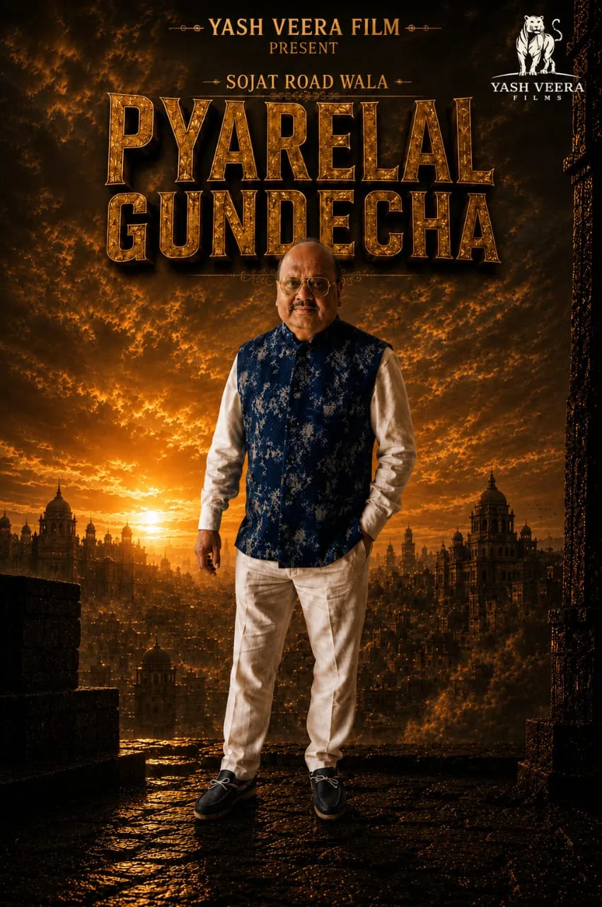

The man behind the frame
Pyarelal
Gundecha.
A visionary force behind Indian cinema.
experience
A visionary force behind Indian cinema
In an industry where dreams demand courage, vision demands leadership, and success demands relentless determination, Pyarelal Gundecha stands as a powerful name driven by an unwavering passion for cinema.
A producer, industry leader, visionary entrepreneur, and a strong voice for filmmakers, he represents a generation that believes cinema is not just entertainment. It is emotion, culture, influence, and legacy.
His association with the Indian Motion Picture Producers' Association (IMPPA) and his role as an Executive Committee Member reflect his active involvement and commitment towards the strength, growth, and future of the Indian film industry.
As an Executive Committee Member of the Tamil Film Producers Council, he continues to stand alongside the creative and production community, contributing his experience, leadership, and vision to one of India's most influential film industries.
The visionary behind Yash Veera Films
As the Founder of Yash Veera Films, Pyarelal Gundecha carries a bold vision: to build a cinematic powerhouse that celebrates powerful storytelling, extraordinary talent, unforgettable characters, and films that connect with audiences across languages and borders.
Yash Veera Films is not just a production company. It is a vision. A platform for dreamers. A home for storytellers. A powerful force created to transform imagination into cinema.
With an ambition to work with exceptional directors, talented actors, creative technicians, writers, musicians, and filmmakers, the vision is to create entertainment that carries scale, emotion, passion, and impact.
Pyarelal Gundecha believes that every great film begins with a dream, but only a fearless vision can transform that dream into history.
His journey. His vision. His legacy.
He represents the spirit of modern Indian cinema: where regional stories can become national sensations, where talent can rise beyond boundaries, and where powerful storytelling can reach the world.
With leadership in the industry and a bold vision through Yash Veera Films, Pyarelal Gundecha continues his journey with one mission:
To create.
To inspire.
To empower.
To build cinema that leaves a legacy.
Producer · Leader · Visionary · Founder
He doesn't just believe in stories.
He believes in the power to make them history.
Yash Veera Films — where vision meets cinema. Where stories become legacy.